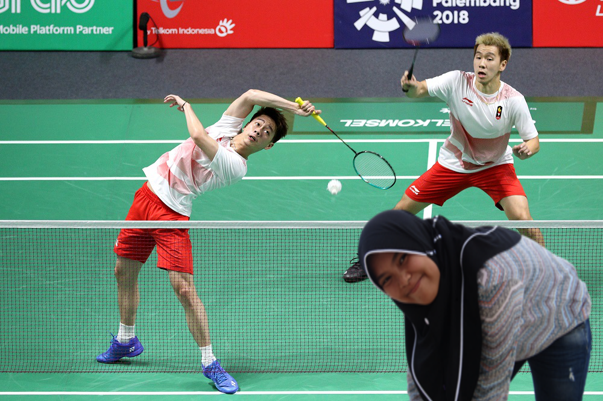
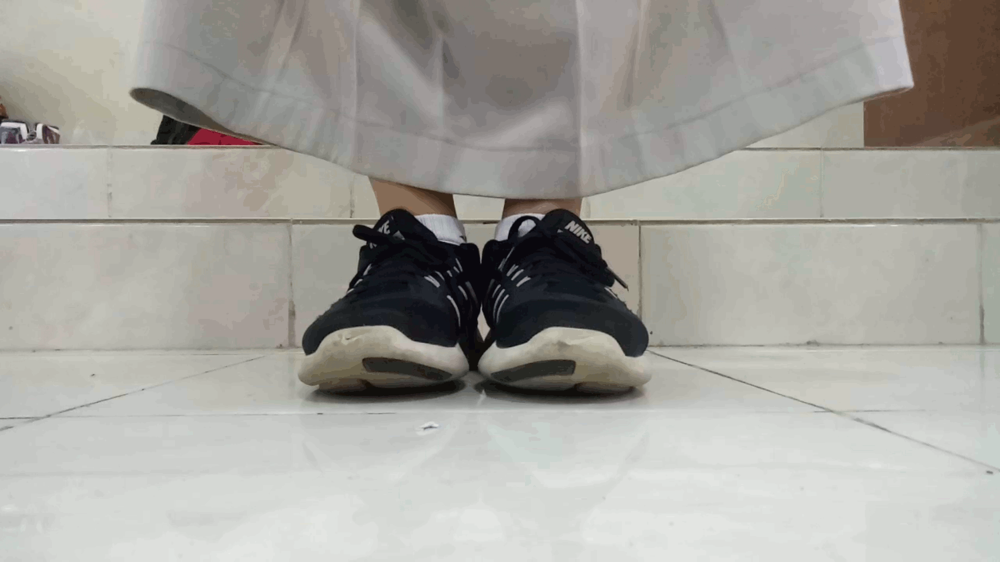
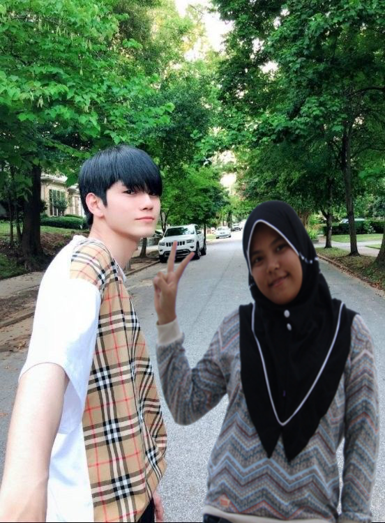
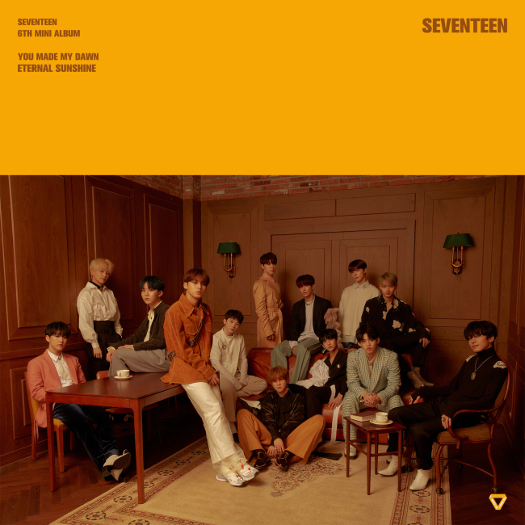

Hobi saya adalah bermain bulu tangkis di waktu senggang. Saya melakukan hobi ini bersama Ayah saya. Berikut ini adalah foto saya dengan hobi saya. Tolong jangan dihujat, karena sebenarnya yang saya lakukan di foto ini adalah sedang memunguti kok yang ada di lapangan
Karya gif ini adalah hasil dari kerja keras sepatu saya dan juga kerja keras dari teman-teman yang sudah membantu saya. Dengan penuh emosi akhirnya karya ini berhasil dikerjakan dengan waktu yang cukup singkat
Ong Seungwoo adalah salah satu mantan member Wanna One. Wanna One baru saja bubar pada akhir-akhir ini. Wanna One terbentuk dari hasil ajang pencarian bakat yang mana Ong Seungwoo merupakan salah satu trainee yang mampu menduduki peringkat 11 besar.
Sebenarnya, Wanna One bukanlah boygroup kesukaan saya. Boygroup favorit saya yang sebenarnya adalah Seventeen. Karena saya fikir Seventeen memiliki pesona sendiri yang tidak dapat ditiru boygroup lain. Seventeen merupakan boygroup yang mengkomposer lagu mereka sendiri dan begitu juga dengan koreografinya
